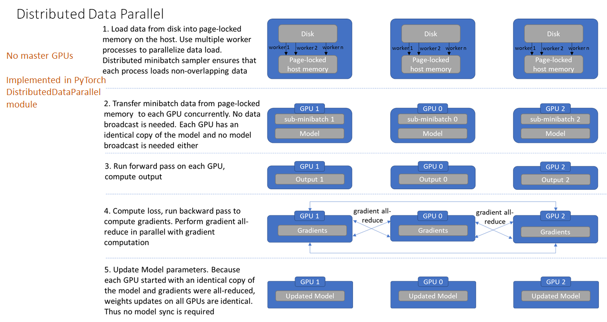

Distributed-DataParallel
个人理解和总结
Posted on Feb.19, 2020
数据并行基础
*- 模型并行
简易实现：略
简易实现，为nn.DataParallel的底层(但后者稍有改进)，包括并行数据加载，每个GPU本地副本对一批数据正/反向传播，梯度发送到主进程，reduce归约操作计算平均梯度。然后将平均梯度结果发送回GPU，更新模型参数。
后端使用数据并行性和有效的网络通信软件库(例如NCCL)，可以实现使训练时间几乎线性减少。
主GPU收集网络输出，计算损失函数值。损失值分散给各个GPU，每个GPU进行反向传播以计算梯度。最后，在主GPU上归约梯度、进行梯度下降，并更新主GPU上的模型参数。将更新后的模型参数复制到剩余的从属 GPU 中，以此来实现并行。
总而言之，只有正/反向传播在各个GPU上进行。其余的计算，包括更新权重均在主GPU进行。
注：
这样会导致内存和GPU使用率出现很严重的负载不均衡现象。因为在这里GPU0作为master来进行梯度的汇总和模型的更新，再将计算任务下发给其他GPU。
低效率在于1.冗余数据副本, 2.在前向传播之前跨GPU进行模型复制, 3.主GPU不必要地收集所有的output, 4.在前向传播之前跨GPU进行模型复制, 5.梯度减少流水线机会未开发, 6.GPU利用率不均
分布式数据并行
DDP Overview, Author: Shen Li- 并行处理机制
分布式并行支持all-reduce, broadcast, send和receive等。
通过MPI实现CPU通信，NCCL实现GPU通信。可用于单/多机器多卡。
由于distributed相对于上述的nn.DataParallel是一个底层的API，所以我们要修改代码，使其能够独立运行在机器(节点)中。

不同于DataParallel的单进程控制多GPU，在distributed的帮助下，我们只需编写一份代码，torch就会自动将其分配给n个进程。分别在n个GPU上运行，不再有主GPU，每个GPU执行相同的任务。
对比DataParallel，DistributedDataParallel的优势如下：
1. 每个进程对应一个独立的训练过程，且只对梯度等少量数据进行信息交换。在各进程梯度计算完成之后，各进程需要将梯度进行汇总平均，然后再由 rank=0 的进程，将其 broadcast 到所有进程。之后，各进程用该梯度来独立的更新参数。而 DataParallel是梯度汇总到gpu0，反向传播更新参数，再广播参数给其他的gpu
2. 每个进程包含独立的解释器和 GIL。一般使用的Python解释器CPython：是用C语言实现Pyhon，是目前应用最广泛的解释器。全局锁使Python在多线程效能上表现不佳，全局解释器锁（Global Interpreter Lock）是Python用于同步线程的工具，使得任何时刻仅有一个线程在执行。
每个进程拥有独立的解释器和 GIL，消除了来自单个 Python 进程中的多个执行线程，模型副本或 GPU 的额外解释器开销和 GIL-thrashing ，因此可以减少解释器和GIL 使用冲突。这对于严重依赖 Python runtime 的 models 而言，比如说包含 RNN 层或大量小组件的models 而言，这尤为重要。
PyTorch并行和分布式训练
- 介绍 torch.distributed的功能
分布式并行训练(DDP)
Distributed Data-Parallel Training，能负责梯度的通信，来保障模型副本同步，并且通过并行计算加速训练。
PyTorch还支持基于RPC的分布式训练(RPC)，它更通用，集体通信(c10d)等特性，略。
有多种选项。按照从简单到复杂，从原型到产品的思路，开发的路线将是： 1. 单卡训练 2. 单机多卡 DataParallel，如果想以最小的代码改动来加速训练 3. 单机多卡 DistributedDataParallel，如果想更进一步加速 4. 多机多卡 DistributedDataParallel和launching script，如果想突破单机的限制 5. 弹性 torchelastic，训练中资源可以动态地加入和离开，可以容忍OOM错误. （6. 数据并行可以和自带混合精度AMP搭配使用）
虽然很简易应用，它没法提供最好的性能。因为DataParallel在每次传播过程中都需要复制模型，并且单进程-多线程的并行会遭受GIL的冲突问题
相比DataParallel，DistributedDataParallel需要多一步来设置，即初始化进程组(init_process_group).DDP使用多进程并行，所以在模型副本间没有GIL冲突，另外还运用了多种性能优化策略，可见论文VLDB'20 DDP可以和模型并行很好结合，模型并行是在模型体积很大(如bert)时使用的。
import os
import sys
import tempfile
import torch
import torch.distributed as dist
import torch.nn as nn
import torch.optim as optim
import torch.multiprocessing as mp
from torch.nn.parallel import DistributedDataParallel as DDP
def setup(rank, world_size):
if sys.platform == 'win32':
# Distributed package only covers collective communications with Gloo
# backend and FileStore on Windows platform. Set init_method parameter
# in init_process_group to a local file.
# Example init_method="file:///f:/libtmp/some_file"
init_method="file:///{your local file path}"
# initialize the process group
dist.init_process_group(
"gloo",
init_method=init_method,
rank=rank,
world_size=world_size
)
else:
os.environ['MASTER_ADDR'] = 'localhost'
os.environ['MASTER_PORT'] = '12355'
# initialize the process group
dist.init_process_group("gloo", rank=rank, world_size=world_size)
def cleanup():
dist.destroy_process_group()